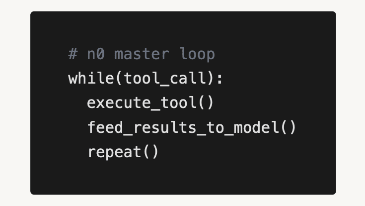

There is no doubt that OpenAI's Codex CLI and Anthropic's Claude Code agents are order of magnitude shifts in what we can expect from coding agents.
I recently did a deep dive and wrote articles exploring how Claude Code works and how OpenAI Codex works behind the scenes.
In short, there are two core innovations.
This is a term I just made up now: Human-centric agent design
In other words, instead of designing coding agents as complex DAGs where models route between levels to different prompts and different tools, these agents are simple two layer while loops.

There is one master loop, the one you talk to. And it can call a few different tools.
Instead of defining hundreds of specialized functions the model can access, the LLM is given access to the bash command line.
Bash is all you need.
In the good 'ol days , we used to create small functions for each thing a model would do. For example, run_test or create_file. This is a great way to prevent loops, avoid mistakes, and steer models in the right direction. Models weren't good enough for anything else. But it has two main drawbacks.
#1 - Simple loops give the agent flexibility to fix their mistakes. Rigid DAGs prevent this.
One of our customers had hundreds of nodes in their agent DAG. They claimed complexity was their IP- their competitive moat. Then Claude Code came out and broke that assumption.
They’ve since rebuilt their entire stack around simple loops. The simpler you make it, the more the agent can explore and solve ambiguous problems.
For example, a coding agent with bash can try different commands, redownload libraries, and think out-of-the-box.
I often see Claude Code creating and running Python scripts solely as a way to test its own code!
#2 - It’s just harder to develop DAGs. It takes more time to think through every single path, rather than just letting the model run.
This is really just the Zen of Python applied to agents: simple is better than complex, flat is better than nested.
I think there is another, more subtle reason, that this works well.
For purposes of prompt engineering (or err... context engineering), you should treat an LLM like a human. After all, it was trained on human writing.
Ask yourself: how do you develop software?
You don't work in a small window. Writing one file at a time.
You bounce around. You run tests while developing. You discover things don't work half-way through. You change the spec. And importantly, you probably use the command line.
Just as you would, I've seen coding agents write a cURL to test a backend endpoint. It just makes sense. It's the human way to do it.
Here's my prediction...
Soon every ChatGPT chat session, every AI chatbot, and every agent will be spun up with its own VM.
It's more flexible. Agents want to create Markdown files. Agents want to save their progress, to create new folders, and explore.
This creates massive demand for cloud infrastructure companies.
If every agent needs a VM, who provides those VMs at scale? Companies like Modal, Cloudflare, Beam, Render are well-positioned for this.
Think about what agents need:
These are hard and important infrastructure problems.
As a concrete example: I have a GitHub workflow that runs every day at 9am. It launches headless Claude Code with a simple prompt. The agent:
That’s it. The file system is the state. The agent reads files, writes files, and moves on.
Imagine building that without a filesystem! Possible, but more than 2 hours of work for sure.